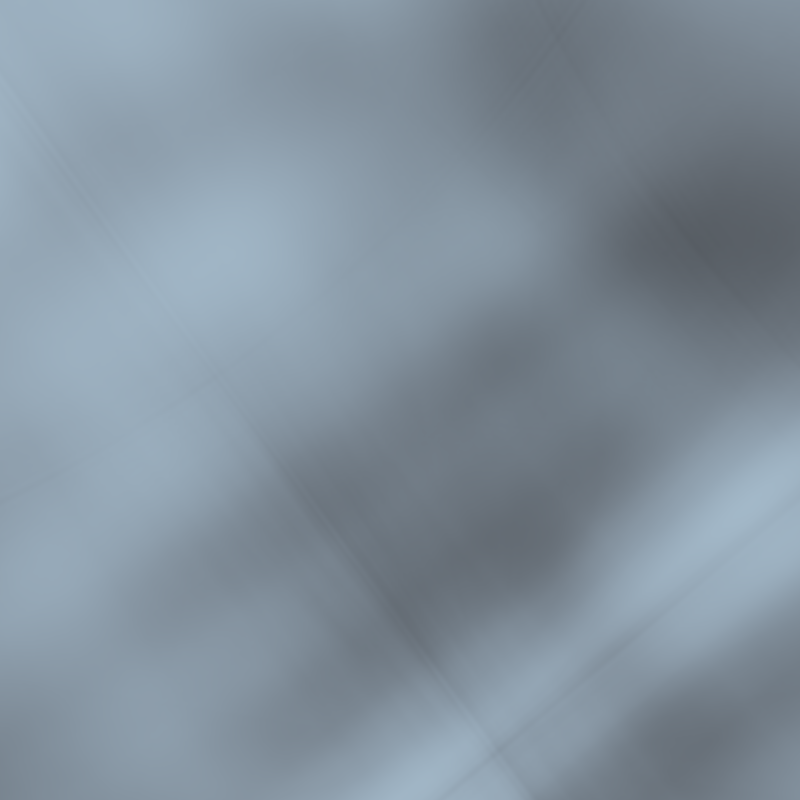

Part 1
MLP: layers=4, width=256, PE L=10, lr=0.01 Training on mps for 2000 iters, batch size 10000


MLP: layers=4, width=256, PE L=10, lr=0.01 Training on mps for 2000 iters, batch size 10000
2.1 Camera & Ray Geometry:
I implemented a unified transform() that works for both NumPy and PyTorch, converting 3D points from camera to world coordinates. I added pixel_to_camera() to invert the pinhole model and used it inside RaysData to build ray origins and directions for every pixel across all training images.
2.2 Ray & Point Sampling:
I wrote RaysData to flatten all training images into a single ray dataset stored on CPU. Each iteration samples a random batch of rays and only moves those rays to GPU. I implemented sample_along_rays() for stratified sampling between near and far bounds to produce (B, S, 3) 3D points along each ray.
2.3 Visualization:
I added a visualize_rays_and_samples() helper using Viser that shows camera frustums, sampled rays, and 3D points. I ran it once for the screenshot deliverable.
2.4 NeRF Network: I implemented positional encoding and a standard NeRF MLP: 8 layers × 256 hidden units, with PE applied to both 3D points and view directions. The network outputs density (sigma) and RGB, using ReLU for sigma and sigmoid for color.
2.5 Volume Rendering & Training:
I implemented the NeRF volume rendering equation (alphas, transmittance, and weighted RGB). The MSE loss is computed against the ground-truth pixel colors. I trained LEGO with global random ray sampling, computed validation PSNR, saved progress images, and stored all stats into lego_stats.npz.


Changed near/far bounds:
My real setup is much smaller than LEGO, so I used near=0.02 and far=0.5 to ensure samples fall on the object.
Validation handling:
My dataset sometimes has zero validation images, so I added a robust has_val check and disabled validation when needed, using a training pose for preview renders.
Memory adjustments:
To avoid GPU OOM on the remote server, I kept all rays on CPU in RaysData and only transferred mini-batches to GPU each step.
Training:
I kept the same NeRF architecture and hyperparameters as LEGO (64 samples, batch 10k, lr 5e-4). Training statistics were saved to my_stats.npz for plotting.
Orbit GIF: Instead of provided test poses, I generated new camera poses by rotating around one training camera position and rendered a 60-frame GIF for novel-view synthesis.
Reflection:
There is an issue of rendering the GIF, however, I think this is more of data sampling issue rather than the model issue because I use the same model for lego and it worked. However, when it comes to my own dataset where lots of camera views are eliminated due to the tags getting blocked, it affected the overal rendering process.
